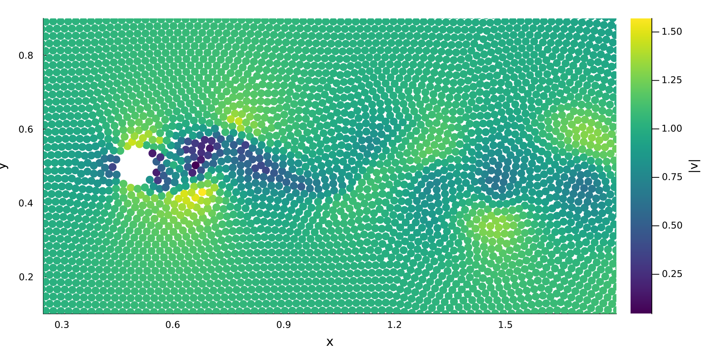
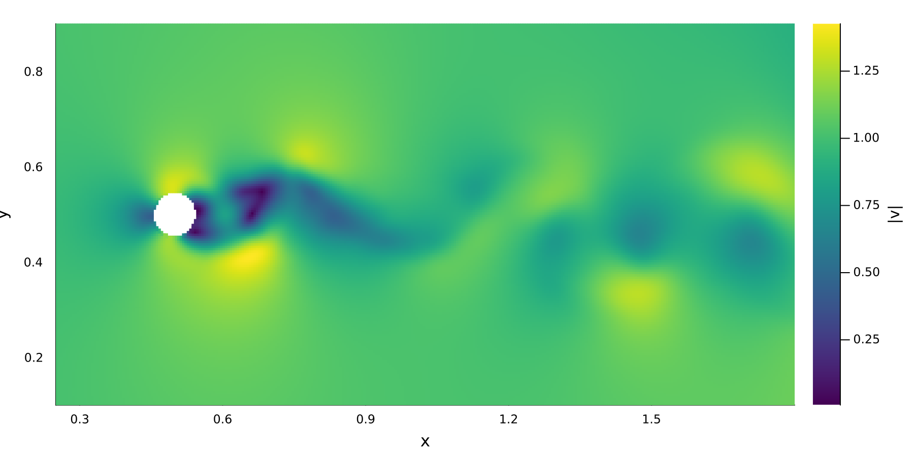
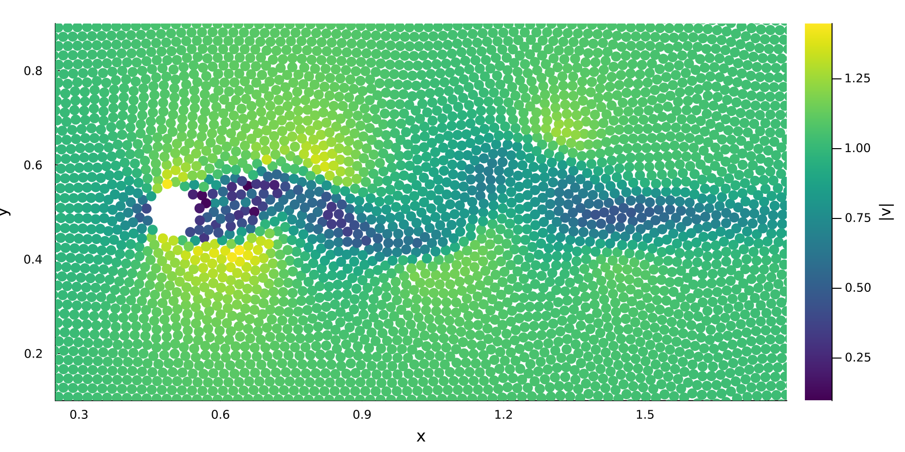
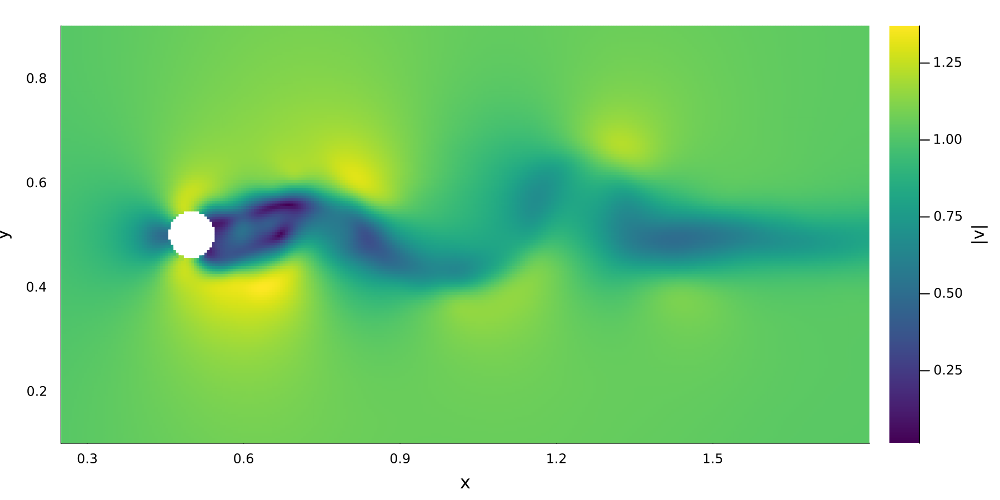

Visualizing particle data with Plots.jl
In this tutorial, we run the two-dimensional vortex street from examples/fluid/vortex_street_2d.jl and visualize the particle data with Plots.jl.
using TrixiParticles
using PlotsThe example defines the particle spacing as particle_spacing_factor * cylinder_diameter. We deliberately use a very coarse particle resolution. This makes the distinction between the discrete particles and the interpolated field in the next section clear. To remove visual clutter on this page, we disable the info callback.
trixi_include(@__MODULE__,
joinpath(examples_dir(), "fluid", "vortex_street_2d.jl");
particle_spacing_factor=0.2, info_callback=nothing);[ Info: You just called `trixi_include`. Julia may now compile the code, please be patient.Visualizing discrete particles
SPH stores the solution on moving particles. The standard plotting recipe provides the quickest way to inspect their distribution at the final time. We color the fluid particles by the magnitude of the velocity stored on each particle.
v_ode, _ = sol.u[end].x
v_fluid = TrixiParticles.wrap_v(v_ode, fluid_system, semi)
active_particles = TrixiParticles.eachparticle(fluid_system)
particle_velocity = TrixiParticles.current_velocity(v_fluid,
fluid_system)[:, active_particles]
particle_velocity_magnitude = vec(sqrt.(sum(abs2, particle_velocity; dims=1)))
particle_plot = plot(fluid_system, sol; zcolor=particle_velocity_magnitude, color=:viridis,
xlims=(0.25, 1.8), ylims=(0.1, 0.9), legend=false,
xlabel="x", ylabel="y", colorbar=true, colorbar_title="|v|",
size=(900, 450))
Interpolating particle data onto a regular grid
Smoothed particle hydrodynamics (SPH) represents a continuous (smoothed) field by a discrete set of particles. While visualizing individual particles is straightforward and often sufficient, in order to visualize the actual field approximation, the particle data must be interpolated.
Importantly, interpolation does not add physical resolution: features that are not resolved by the particles cannot be recovered by choosing a finer interpolation grid. It simply visualizes the SPH approximation instead of only the interpolation points.
interpolate_plane_2d constructs regularly spaced sample points between two corners and uses the SPH kernel to reconstruct the requested fields there. The interpolation spacing is one quarter of the particle spacing, so the plot contains many more pixels than the simulation contains particles.
interpolation_min = [0.0, 0.0]
interpolation_max = domain_size
interpolation_spacing = particle_spacing / 4
interpolated = interpolate_plane_2d(interpolation_min, interpolation_max,
interpolation_spacing, semi, fluid_system, sol)
interpolated_velocity_magnitude = vec(sqrt.(sum(abs2, interpolated.velocity; dims=1)))The returned named tuple also contains pressure, density, neighbor_count, and computed_density. Here we visualize the magnitude of the interpolated velocity.
interpolated_plot = scatter(interpolated.point_coords[1, :],
interpolated.point_coords[2, :];
marker_z=interpolated_velocity_magnitude,
color=:viridis,
marker=:square, markerstrokewidth=0, markersize=2.5,
aspect_ratio=:equal, size=(900, 450),
xlims=(0.25, 1.8), ylims=(0.1, 0.9), xlabel="x", ylabel="y",
label=nothing, colorbar_title="|v|")
Compared with the visibly discrete particle distribution, the interpolated field shows much more detail, representing the continuous SPH approximation of the solution.
To write the same reconstruction as a VTI image for ParaView, replace the interpolation call above with interpolate_plane_2d_vtk:
interpolate_plane_2d_vtk(interpolation_min, interpolation_max, interpolation_spacing,
semi, fluid_system, sol; filename="vortex_street_velocity")Plotting saved VTK data
Saved VTK files can be loaded for plotting and interpolation without running the simulation again. In a new Julia session, first load only the example setup. By setting both sol and ode to nothing, we can skip the simulation and load only the setup.
trixi_include(@__MODULE__,
joinpath(examples_dir(), "fluid", "vortex_street_2d.jl");
particle_spacing_factor=0.2, info_callback=nothing,
sol=nothing, ode=nothing)[ Info: You just called `trixi_include`. Julia may now compile the code, please be patient.Here, iteration 100 corresponds to the earlier simulation time t = 2. A restart file is required for every system, in the same order as in semi.
iter = 100
restart_files = (joinpath("out", "fluid_1_$iter.vtu"),
joinpath("out", "open_boundary_1_$iter.vtu"),
joinpath("out", "boundary_1_$iter.vtu"),
joinpath("out", "boundary_2_$iter.vtu"))With these files, we can reconstruct the solution at the saved time.
ode = semidiscretize(semi, tspan; restart_with=restart_files)
v_ode, u_ode = ode.u0.x
t = ode.tspan[1][ Info: No 'velocity' field found in VTK file. Will be set to zero.
[ Info: No 'velocity' field found in VTK file. Will be set to zero.
[ Info: Adjusting initial time from 0.0 to restart time 2.0Before we can plot or interpolate the solution, however, we need to update the semidiscretization to re-calculate quantities such as pressure and to update the neighborhood search.
TrixiParticles.update_systems_and_nhs(v_ode, u_ode, semi, t)The reconstructed arrays can be plotted like we did above.
v_fluid = TrixiParticles.wrap_v(v_ode, fluid_system, semi)
active_particles = TrixiParticles.eachparticle(fluid_system)
particle_velocity = TrixiParticles.current_velocity(v_fluid,
fluid_system)[:, active_particles]
particle_velocity_magnitude = vec(sqrt.(sum(abs2, particle_velocity; dims=1)))
particle_plot_vtk = plot(fluid_system, v_ode, u_ode, semi;
zcolor=particle_velocity_magnitude,
color=:viridis, xlims=(0.25, 1.8), ylims=(0.1, 0.9),
legend=false, xlabel="x", ylabel="y", colorbar=true,
colorbar_title="|v|", size=(900, 450))
Interpolation works directly on the same reconstructed arrays.
interpolated_vtk = interpolate_plane_2d(interpolation_min, interpolation_max,
interpolation_spacing, semi, fluid_system,
v_ode, u_ode)
interpolated_velocity_magnitude = vec(sqrt.(sum(abs2, interpolated_vtk.velocity;
dims=1)))
interpolated_plot_vtk = scatter(interpolated_vtk.point_coords[1, :],
interpolated_vtk.point_coords[2, :];
marker_z=interpolated_velocity_magnitude,
color=:viridis, marker=:square, markerstrokewidth=0,
markersize=2.5, aspect_ratio=:equal, size=(900, 450),
xlims=(0.25, 1.8), ylims=(0.1, 0.9),
xlabel="x", ylabel="y", label=nothing,
colorbar_title="|v|")
And, as before, we can also write the interpolation to a VTK file for ParaView.
interpolate_plane_2d_vtk(interpolation_min, interpolation_max, interpolation_spacing,
semi, fluid_system, v_ode, u_ode;
filename="vortex_street_velocity_vtk")This page was generated using Literate.jl.